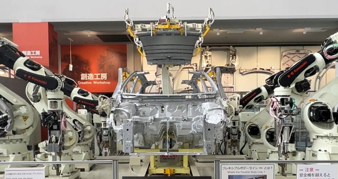

1. Ghibli Park
La ville de Nagoya est en partie connue par de nombreux touristes en raison de la présence du célèbre parc Ghibli. Parc regroupant tout l’univers du Studio Ghibli, si vous avez vu les films les plus connus du studio comme Totoro, Princesse Momonoké, Le Château Ambulant ou encore Kiki la petite sorcière, vous reconnaitrez énormément d’infrastructures et de paysages provenant des films de Miyazaki !
N’oubliez pas de réserver vos places au moins deux mois à l’avance c’est ce qui est recommandé. Nous avons personnellement réservé plus de 2 mois à l’avance de notre côté également. Le prix du parc varie en fonction du jour, ce sera toujours moins cher en semaine qu’en weekend ou en période de vacances scolaires (japonaises bien sûr !). Nous avons payé 7800 yens la place en weekend, ce qui nous fait environ 46€ environ et c’est pour voir toute l’intégralité du parc avec les maisons y compris.
Site pour les réservations : ghibli-park.jp/en/ticket/
L’un des lieux les plus intéressants à visiter est le Ghibli’s Grand Warehouse où il faut également réserver et sélectionner la plage horaire à laquelle on veut rentrer un peu comme le Super Nintendo World d’Universal Studio. À l’intérieur vous aurez le droit à un petit court-métrage inédit du Studio Ghibli d’une vingtaine de minutes qui n’est même pas diffusé dans le monde. Cependant, le seul bémol est que le court-métrage est en voix originale japonaise sans sous-titre anglais.
De plus, dans le Grand Warehouse vous aurez une petite partie un peu à la musée Grévin, avec des statues de personnages iconiques issus de leurs plus grands films. Le temps d’attente est quasiment inexistant pour toutes les statues SAUF No Face du Voyage de Chihiro où il y a une très longue queue d’au moins 35-40 minutes d’attente.
Il y a également des boutiques, une salle avec le Chatbus en taille réelle, une salle de toutes les affiches de films Ghibli (même en plusieurs langues différentes) et une salle qui détient l’Oscar gagné par le dernier film Ghibli "Le Garçon et le Héron".
Adresse : Japon, 〒480-1342 Aichi, Nagakute, Ibaragabasama, 乙１５３３−１
2. Toyota Factory Museum
Voici sans doute le musée de l’Automobile le plus connu du Japon, vous pourrez y voir toute l’histoire de l’entreprise Toyota. Ce n’était pas à la base une entreprise qui vendait des voitures, je vous laisserai deviner ce qu’elle produisait à ses débuts !
Le musée est très connu pour sa partie automobile où on peut voir des grosses machines qui montrent la construction automatisée d’une voiture. La moitié des guides japonaises parlent anglais, ce qui rend la visite encore plus accessible.
Vous aurez également la possibilité de fabriquer votre propre porte-clé d’une petite voiture Toyota personnalisée, et d’assister à une démonstration de forge où l’on vous remet une bielle miniature en souvenir.
Pour les collectionneurs de tampons, bonne nouvelle : vous trouverez vers l’entrée du musée 4 très beaux tampons à mettre dans votre carnet. Si vous n’avez pas de carnet, le musée met à disposition un petit livret.
L’entrée coûte 1000 yens soit environ 6€, ce qui est très raisonnable pour la richesse du contenu proposé.
Adresse : 4 Chome-1-35 Noritakeshinmachi, Nishi Ward, Nagoya, Aichi 451-0051, Japon
3. Nagoya TV Tower
La Nagoya TV Tower est la plus vieille tour de télévision du Japon (construite en 1954). De mon point de vue, c’est une mini Tour Eiffel assez sympathique.
À proximité de la tour, vous trouverez plusieurs boutiques, notamment une boutique Ghibli (hé hé…).
4. Shopping à Osu301

Osu301 est un lieu incontournable pour le shopping à Nagoya. Si vous voulez acheter des souvenirs ou manger de bonnes choses, c’est l’endroit idéal !
Adresse : 3 Chome-30-60 Osu, Naka Ward, Nagoya, Aichi 460-0011, Japon
5. Osu Kannon
Le temple sans doute le plus connu de Nagoya, il se situe juste à côté du quartier d’Osu301. C’est certes grand mais relativement petit par rapport à d’autres temples du Japon. Peut-être que mon impression vient du fait que c’est le premier temple que j’ai visité au Japon.
Je dirais qu’il se visite en 10-15 minutes maximum.
Adresse : 2 Chome-21-47 Osu, Naka Ward, Nagoya, Aichi 460-0011, Japon